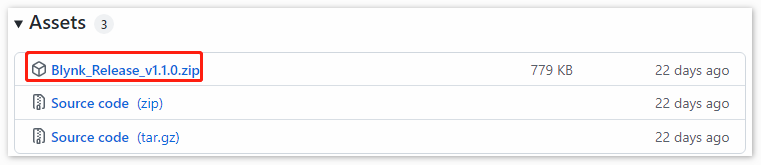
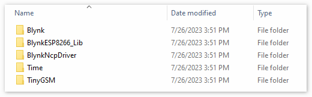
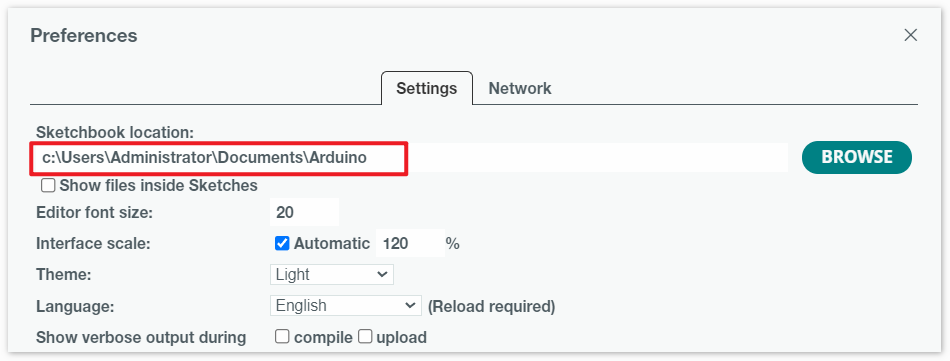
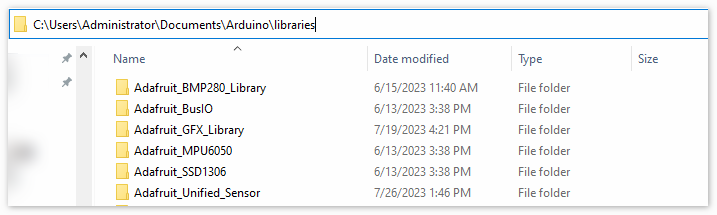
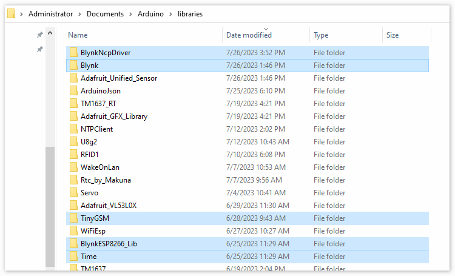

Bemerkung
Hallo und willkommen in der SunFounder Raspberry Pi & Arduino & ESP32 Enthusiasten-Gemeinschaft auf Facebook! Tauchen Sie tiefer ein in die Welt von Raspberry Pi, Arduino und ESP32 mit anderen Enthusiasten.
Warum beitreten?
Expertenunterstützung: Lösen Sie Nachverkaufsprobleme und technische Herausforderungen mit Hilfe unserer Gemeinschaft und unseres Teams.
Lernen & Teilen: Tauschen Sie Tipps und Anleitungen aus, um Ihre Fähigkeiten zu verbessern.
Exklusive Vorschauen: Erhalten Sie frühzeitigen Zugang zu neuen Produktankündigungen und exklusiven Einblicken.
Spezialrabatte: Genießen Sie exklusive Rabatte auf unsere neuesten Produkte.
Festliche Aktionen und Gewinnspiele: Nehmen Sie an Gewinnspielen und Feiertagsaktionen teil.
👉 Sind Sie bereit, mit uns zu erkunden und zu erschaffen? Klicken Sie auf [hier] und treten Sie heute bei!
1.3 Hinzufügen der erforderlichen Bibliotheken
Für die Verwendung von Blynk im Arduino IDE müssen die richtigen Bibliotheken hinzugefügt werden.
Klicken Sie auf HIER, scrollen Sie nach unten zu „Assets“ und laden Sie die erste
.zip-Datei herunter.Bemerkung
Bitte beachten Sie, dass die in der untenstehenden Abbildung angezeigte Versionsnummer veraltet sein könnte. Wir empfehlen dringend, die neueste verfügbare Version herunterzuladen und zu installieren.

Entpacken Sie diese Datei und gehen Sie in den Ordner
libraries, um die folgenden Ordner zu sehen.
Kopieren Sie alle und fügen Sie sie in den Ordner
librariesIhres Sketchbooks ein.Schritt 1: Sie können den Speicherort Ihres Bibliotheksordners unter
Datei > Einstellungen > Sketchbook-Speicherortfinden oder ändern.
Schritt 2: Gehen Sie zum Speicherort Ihres Sketchbooks (aus der Arduino IDE auffindbar). Finden Sie den Ordner
librariesund klicken Sie darauf, um ihn zu öffnen.
Schritt 3: Fügen Sie alle entpackten Ordner von
Blynk_Release_vx.x.x\librariesin den Bibliotheksordner ein.